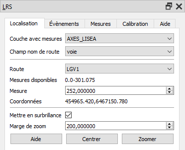
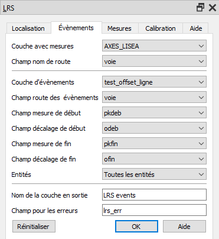
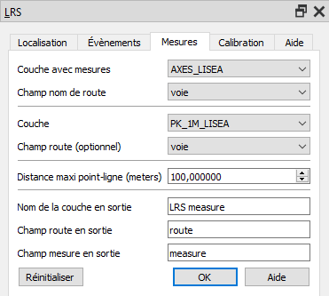
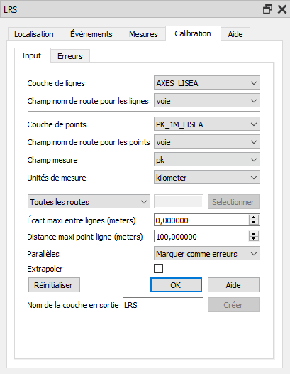
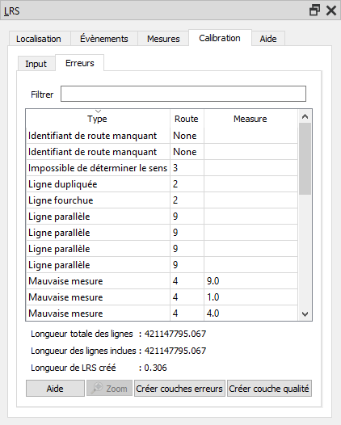

LRS Plugin for QGIS
"Le référencement linéaire (aussi appelé système linéaire de référence ou système de référencement linéaire ou LRS) est une méthode de référencement spatial, dans laquelle la localisation des entités est décrite sous forme de mesures le long d'un élément linéaire à partir d'un point d'origine, par exemple une borne le long d'une route." (Linear referencing, Wikipedia, 2020).
Introduction
|
Cette extension a été développée par MPA Solutions en collaboration avec Provincia Autonoma di Trento - Dipartimento infrastrutture e mobilità - Servizio Gestione Strade - Ufficio Controllo e Tecnologie Stradali.
La traduction de l'interface et de l'aide a été réalisée par SIGéal.
MotivationLa partie la plus difficile du LRS est la cohérence et la qualité des données. Cela est dû au fait que les données linéaires et les données ponctuelles sont maintenues indépendament, parfois même par des services différents. L'identification et la correction des erreurs dans le LRS est donc fastidieuse et chronophage sans outils spécialisés. La principale valeur de cette extension réside dans ses fonctionnalités de détection, de repérage et de correction des erreurs. |

|
Fonctionnalités
- Tâches standard de LRS : calibration (création du LRS), création d'évènements ponctuels et linéaires, et calcul de mesures pour des points.
- Compatibilité avec tous les formats reconnus par QGIS.
- Les lignes, les multi-lignes, les points et les multi-points sont supportés. Les lignes ne sont pas obligatoirement orientées.
- Création et mise à jour dynamique et immédiate de la liste et de la couche des erreurs, ainsi que de la couche de qualité, lorsque la couche de référence est modifiée.
- Stockage du LRS en mémoire.
- Interpolation par défaut entre les points, extrapolation optionnelle.
Terminologie
- la route est une entité linéaire représentée par une ou plusieurs lignes ayant le même identifiant, ex. une route avec le même numéro ou une rivière avec le même nom.
- l'id d'une route est son identifiant unique
- la mesure est la mesure réelle sur le terrain le long d'une entité linéaire, ex. les kilomètres mesurés le long d'une route depuis son origine qui peut être représentée dans le monde réel par une borne.
Paramètres communs en entrée
Les trois onglets Localisation, Évènements et Mesures, qui s'appuient sur une couche vectorielle existante avec des mesures, ont deux paramètres communs qui sont présents sur tous les onglets
Paramètres communs :
- Couche avec mesures: Couche vectorielle en entrée contenant des mesures.
- Champ nom de route : Colonne contenant l'identifiant de la route.
Localisation
Une position simple peut être localisée de façon interactive depuis l'onglet Localisation.

Paramètres de l'onglet Localiser :
- Couche avec mesures : Couche vectorielle avec mesure en entrée.
- Champ nom de route : Champ contenant les identifiants des routes.
- Route : Identifiant de la route.
- Plages de mesures disponibles : Liste des plages de mesure disponibles (séparées par des virgules).
- Mesure : Mesure de l'évènement.
- Coordonnées : Coordonnées de l'évènement dans le système de coordonnées (SCR) de la carte, ou message d'erreur si l'évènement ne peut pas être localisé.
- Surbrillance : Mise en surbrillance de l'évènement sur la carte.
- Marge de zoom : Marge (rayon minimal) en unités de carte utilisée pour le zoom autour de l'évènement.
Il est possible de Centrer la carte sur l'évènement courant ou de Zoomer sur l'évènement en utilisant la marge spécifiée.
Créer des Évènements
Des évènements ponctuels ou linéaires peuvent être créés depuis l'onglet Évènements.

Paramètres de l'onglet Évènements :
- Couche avec mesures : Couche vectorielles avec mesures en entrée.
- Champ nom de route : Champ contenant les identifiants des routes.
- Couche d'évènements : Couche contenant les informations sur les évènements. Ex. identifiants de routes et mesures. Cette couche est en général une table sans géométrie.
- Champ route des évènements : Champ contenant les identifiants des routes des évènements.
- Champ mesure de début : Champ contenant la mesure d'un évènement ponctuel ou la mesure de début d'un évènement linéaire.
- Champ décalage de début : Champ contenant le décalage d'un évènement ponctuel ou le décalage de début d'un évènement linéaire.
- Champ mesure de fin : Champ contenant la mesure de fin d'un évènement linéaire. Doit être laissé vide pour les évènements ponctuels.
- Champ décalage de fin : Champ contenant le décalage de fin d'un évènement linéaire. Doit être laissé vide pour les évènements ponctuels.
- Entités : Sélection des entités à traiter de la couche d'évènements, toutes les entités ou seulement celles qui sont sélectionnées peuvent être traitées.
- Nom de la couche générée : Nom utilisé dans la légende pour la couche générée.
- Champ des erreurs : Champ pour les erreurs (optionnel). Ce champ contient la description des raisons pour lesquelles un évènement n'a pas pu être (complètement) généré. Si ce paramètre est laissé vide, le champ n'est pas créé.
La couche générée est de type ponctuel si le champ mesure de fin est laissé vide, ou de type linéaire si le champ mesure de fin est renseigné. La couche générée contient tous les attributs de la couche en entrée, plus le champ d'erreur s'il est spécifié.
Si un décalage de début est spécifié, les points sont créés avec un décalage correspondant à la valeur saisie, à droite de la ligne de référence dans le sens des mesures croissantes si elle est positive, à gauche si elle est négative. Les évènements linéaires sont décalés uniformément si seul le décalage de début est spécifié Si le décalage de fin est aussi spécifié, le décalage de la ligne créée évolue progressivement du décalage de début au décalage de fin, proportionnellement aux mesures.
La sortie est créée sous la forme d'une couche en mémoire qui peut ensuite être transformée en couche de type fichier, en utilisant l'option standard Convertir en couche permanente de QGIS, ou en faisant un cliquer-glisser vers un schéma PostGis existant dans l'explorateur QGIS.
Il peut arriver que les mesures d'évènement soient légèrement en dehors du LRS disponible (au début ou à la fin d'une route, par exemple) du fait de l'imprécision des valeurs décimales des données en entrée. Pour éviter ces erreurs indésirables, une tolérance de mesure peut être appliquée :
- Évènements ponctuels : Si une mesure d'évènement exacte n'est pas trouvée, l'extension recherchera l'évènement le plus proche dans l'intervalle de tolérance.
- Évènements linéaires : Les parties manquantes d'évènements (trous) sont enregistrées comme des erreurs seulement si elles sont plus longues que l'intervalle de tolérance.
La tolérance d'évènement est paramétrée par défaut à 0.0001 (en unités de carte).
Calculer des mesures
Les identifiants de route et les mesures de points existants peuvent être calculés depuis l'ongletMesures.

Paramètres de l'onglet Mesures :
- Couche avec mesures : Couche vectorielle avec mesure en entrée.
- Champ nom de route : Champ contenant les identifiants des routes.
- Couche : Couche de points existante pour laquelle les mesures doivent être calculées..
- Champ route (optionnel): Champ route pour la couche de points (optionnel).
- Distance maximale entre point et ligne : Distance maximale entre le point et la ligne la plus proche.
- Nom de la couche générée : Nom utilisé dans la légende pour la couche générée.
- Champ route en sortie : Nom du champ dans lequel l'identifiant de la route sera stocké.
- Champ mesure en sortie: Nom du champ dans lequel la mesure sera stockée.
La couche générée contient tous les attributs de la couche en entrée plus le champ de l'identifiant de route et le champ de mesure. Pour calculer une mesure, les points sont projetés sur le point le plus proche de la route la plus proche dans l'intervalle de tolérance. Si la route la plus proche dans l'intervalle de tolérance est trouvée mais qu'il n'y a pas de LRS pour cette partie de la route, le champ de mesure est laissé vide. Si aucune route n'est trouvée dans l'intervalle de tolérance, le champ de l'identifiant de route et le champ de mesure sont laissés vides.
Si l'utilisateur sélectionne un champ route pour la couche de points, alors pour chaque entité de la couche en entrée :
- Si l'identifiant de route du point est une route existante et valide, le point est associé à la ligne la plus proche de cette route pour calculer la mesure.
- Si la valeur du champ est NULL le choix par défaut est retenu : une route proche est sélectionnée automatiquement.
- Si la valeur du champ spécifie une route invalide, aucune mesure n'est générée (le choix par défaut est annulé).
La sortie est créée sous la forme d'une couche en mémoire qui peut ensuite être transformée en couche de type fichier, en utilisant l'option standard Convertir en couche permanente de QGIS, ou en faisant un cliquer-glisser vers un schéma PostGis existant dans l'explorateur QGIS.
Calibration
La calibration est un processus par lequel :
- les éléments de route sont fusionnés en parties de route
- les points sont associés aux routes grâce aux identifiants de route
- l'orientation des routes est déduite des mesures
- une table des résultats de calibration est générée pour chaque partie de route
- une liste des erreurs est générée
La calibration est lancée depuis l'onglet Calibration > Paramètres
Paramètres de calibration

Paramètres :
- Couche de lignes : Couche contenant les lignes représentant les routes. Il peut contenir des lignes et des multi-lignes. Un route unique peut être représentée par plusieurs entités. Les lignes ne sont pas obligatoirement orientées.
- Champ nom de route pour les lignes : Champ de la couche de lignes contenant l'identifiant de route. Tous les types de champ sont acceptés (y compris les nombres flottants), mais les types classiques (texte, entier) sont conseillés.
- Couche de points : Couche contenant des points. Elle peut contenir des points ou des multi-points (mais ces derniers n'ont pas d'intérêt pour le référencement linéaire).
- Champ nom de route pour les points : Champ de la couche de points contenant l'identifiant de route. Le champ peut être de type texte ou entier.
- Champ mesure : Champ de la couche de points contenant les mesures. Tous les types de champs sont acceptés (y compris les nombres flottants), mais les types classiques (texte, entier) sont conseillés. Le type de champ n'est pas obligatoirement le même que celui de l'identifiant de route de la couche de ligne, voir les notes générales.
- Unité de mesure : Unité pour les valeurs du champ mesure.
- Toutes les routes/Inclure des routes/Exclure des routes : La calibration peut être réalisée sur toutes les routes, sur les routes sélectionnées ou sur les routes autres que les routes sélectionnées. Les routes inclues/exclues peuvent être spécifiées sous la forme d'une liste séparée par des virgules à partir de la liste affichée en cliquant sur le bouton Sélectionner. La liste affichée dans la fenêtre est générée à partir des identifiants de routes de la couche de lignes.
- Écart maxi entre lignes : Écart maximal pour l'accrochage des lignes.
- Distance maxi point-ligne : Distance maximale à utiliser pour associer un point à une route.
- Parallèles : Parce que les parallèles
(arrêtes multiples, arrêtes parallèles), par exemple les ronds-points
peuvent être ambigües dans les LRS, elles doivent être traitées de façon spécifique. Trois possibilités sont offertes :
- Marquer comme erreurs : Les parallèles sont ajoutées à la liste des erreurs et exclues de la calibration.
- Traiter comme ligne droite : Les lignes parallèles sont remplacées par une ligne droite entre le début et la fin des parallèles.
- Exclure : Les parallèles sont exclues de la calibration sans être marquées comme des erreurs.
- Extrapoler : Si coché, les mesure sont extrapolées avant le premier et après le dernier point de chaque partie de route. Sinon les segments précédent/suivant le premier/dernier point ne sont pas calibrées.
- Nom de la couche en sortie : Couche vectorielle en mémoire dans laquelle les géométries avec mesure sont enregistrées si un nom est donné. La couche vectorielle en mémoire peut ensuite être enregistrée, en utilisant l'option standard Convertir en couche permanente de QGIS, ou en faisant un cliquer-glisser vers un schéma PostGis existant dans l'explorateur QGIS. La couche générée peut être utilisée comme référence pour les outils Localiser, Évènements et Mesurer.
Lorsque tous les paramètres sont renseignés correctement, la calibration peut être lancée en cliquant sur le bouton Ok. Le processus peut prendre un certain temps, la barre de progression indique l'état d'avancement. Lorsque la calibration est terminée, tous les onglets sont activés et le LRS peut être utilisé et/ou modifié.
Les mesures sont toujours interpolées entre deux points. Ce comportement sera peut-être optionnel par la suite, mais aucun cas d'usage pour lequel l'absence d'interpolation donnerait de meilleurs résultats n'a encore été identifié. Merci de créer une nouvelle issue le cas échéant.
Le LRS généré n'est pas enregistré dans une nouvelle couche, mais est stocké en mémoire et peut être utilisé immédiatement pour générer des évènements ou calculer des mesures. Cela pourra évoluer ultérieurement mais l'API de QGIS ne permet pas pour l'instant de gérer les valeurs de mesures dans les géométries vectorielles. Nous espérons que la nécessaire reconstruction du LRS n'est pas trop gênante dans la mesure où tous les paramètres sont mémorisés dans le projet pour les tâches répétitives et où la calibration est relativement rapide.
L'extension LRS de QGIS fontionne de façon similaire à la fonction CalibrateRoutes_lr() d'ArcGIS avec les paramètres calibrate_method=DISTANCE, search_radius=<Max distance> et interpolate_between=BETWEEN. Avec en plus les paramètres extrapolate_before=BEFORE and extrapolate_after=AFTER si l'optionExtrapoler est coché.
Erreurs de calibration
Lorsque la phase de calibration est terminée, il est possible de vérifier les incohérences de données dans l'onglet Calibration > Erreurs.

Cet onglet contient la liste de toutes les erreurs qui peuvent être filtrées sur toutes les colonnes en saisissant du texte dans la case Filtrer. L'extension peut identifier les erreurs suivantes :
- Ligne dupliquée : Deux lignes ou plus ont le même identifiant et la même géométrie.
- Point dupliqué : Deux points ou plus ont le même identifiant et la même géométrie.
- Patte d'oie : Trois lignes ou plus ont le même identifiant et sont connectées au même noeud.
- Ligne en patte d'oie : La plus courte partie de route connectée à une patte d'oie.
- Point orphelin : Aucune ligne n'a le même identifiant de route que le point.
- En dehors de la plage de tolérance: La distance entre le point et la ligne la plus proche avec le même identifiant de route est plus importante que le paramètre de distance maximale.
- Pas assez de points : Une partie de la route n'a pas assez de points pour être calibrée (deux points au minimum).
- Identifiant de route manquant : Le point ou la route n'a pas d'identifiant de route (NULL).
- Mesure manquante : Le point n'a pas d'attribut mesure (NULL).
- Impossible de déduire le sens : Les mesures de points le long d'une partie de route ne sont pas ordonnées et le nombre de segments dans chaque direction est identique.
- Mauvaise mesure : Une mesure de point n'est pas cohérente avec les autres points et le sens déduit pour la route.
- Référencement dupliqué : Plusieurs parties de route contiennent les mêmes mesures.
- Lignes parallèles : Lignes parallèles (arrêtes multiples), voir le paramètre Parallèles.
Lorsqu'une erreur est sélectionnée dans la liste, elle est mise en surbrillance sur la carte, et il est possible de Zoomer sur l'entité en cliquant sur le bouton situé en dessous de la liste.
Il est aussi possible de générer une couche erreur en mémoire (points et lignes) en cliquant sur le bouton Créer couches erreurs.
Il est également possible de générer une couche qualité en cliquant sur le bouton Créer couche qualité. La couche qualité symbolise par défaut les entités selon leur erreur relative, qui est calculée en faisant la différence entre la distance déduite des mesures définies en attribut du point et la longueur de la ligne mesurée entre les points (en suivant la géométrie de la ligne). Les attributs de la couche qualité sont :
- route : Identifiant de la route.
- m_from : Mesure du point de début du segment.
- m_to : Mesure du point de fin du segment.
- m_len : Longueur entre les mesures de points calculées comme suit : (m_to-m_from) * unités_de_carte_par_unité_de_mesure.
- len : Distance le long de la ligne entre deux points en unités de mesure.
- err_abs : Différence absolue entre m_len and len : m_len - len.
- err_rel : Erreur relative calculée comme suit : err_abs / len.
- err_perc : Valeur absolue de l'erreur relative en pourcentage : abs(err_rel) * 100.
Les propriétés des couches erreurs et de la couche qualité sont stockées dans le projet comme pour n'importe quelle couche, et l'extension mémorise ces couches pour qu'il soit possible de modifier leur symbologie et de la retrouver lors de la réouverture du projet.
La puissance de l'extension réside dans la mise à jour dynamique du LRS, de la liste des erreurs et des couches d'erreurs et de qualité lorsque les couches sources de lignes et de points sont modifiées. L'utilisateur peut commencer à modifier les points et les lignes, zoomer sur une erreur, corriger les données à l'origine de l'erreur et les couches erreurs et qualité sont instantanément mises à jour (rapidement car une seule route est recalibrée), de façon à ce que l'utilisateur puisse voir si la modification est correcte.
Notes générales
- SCR : La calibration du LRS est réalisée dans un seul Système de Coordonnées de Référence (SCR) dans lequel les lignes et les points sont reprojetés (si les couches ont des SCR différents). Le SCR est soit celui de la carte si la projection à la volée est activée, soit le SCR de la couche de lignes. Noter que la distance maximale point-ligne et la distance d'accrochage des lignes sont exprimées dans les unités utilisées pouir construire le LRS (l'unité est ajoutée aux noms de champs).
- Identifiant de Route : Tous les types de champ sont acceptés. Le type des champs d'identifiant de route des couches de lignes et de points ne sont pas obligatoirement les mêmes. Par exemple, les valeurs 1 (entier), 1.0 (flottant) et "1" (texte) sont considérées comme identiques. Dans le cas du format texte, l'association des identifiants de route (trouver les points pour une ligne ou trouver la route pour des évènements) ne tient pas compte de la casse (majuscules/minuscules).
- Les paramètres de tous les onglets sont mémorisés dans le projet. Les paramètres de chaque onglet sont écrits dans le projet lorsque le boutton Ok est cliqué (validation des paramètres). Les boutons Reset dans les différents onglets réinitialisent tous les paramètres à leurs valeurs par défaut.
- Panneau ancrable : La fenêtre de l'extension est ancrable, c'est à dire qu'elle peut être utilisée soit comme fenêtre independante, soit comme panneau ancré dans l'interface principale de QGIS.
Scripts
Ce qui suit est en cours de développement, tous les composants ne sont pas encore adaptés à l'utilisation dans des scripts. Pour l'instant seule la classe LrsEvents peut être utilisée simplement. Le dossier de l'extension doit se trouver dans le chemin PYTHONPATH.Exemple pour les évènements :
qgis_prefix = '/path/to/qgis/installation'
# add path to plugins directory
sys.path.insert(0, prefix + '/share/qgis/python/plugins/')
QgsApplication.setPrefixPath(prefix, True) # does not work?
os.environ['QGIS_PREFIX_PATH'] = prefix # workaround
qgs = QgsApplication([], False)
qgs.initQgis()
# TODO: import public classes to lrs/__init__.py and add __all__
from lrs.lrs.utils import ALL_FEATURES
from lrs.lrs.lrslayer import LrsLayer
from lrs.lrs.lrsevents import LrsEvents
measures = QgsVectorLayer('measures.shp', 'measures', 'ogr')
lrs = QgsVectorLayer('lrs.shp', 'lrs', 'ogr')
lrs_layer = LrsLayer(lrs)
lrs_layer.setRouteFieldName('route')
lrs_layer.load()
lrs_events = LrsEvents(lrs_layer)
lrs_events.create(measures, featuresSelect=ALL_FEATURES, routeFieldName='route',
startFieldName='from', endFieldName='to',
errorFieldName='err', outputName='events')
# Events were created as memory layer:
events = QgsProject.instance().mapLayersByName('events')[0]
crs = QgsCoordinateReferenceSystem.fromEpsgId(3857)
writer = QgsVectorFileWriter('events.shp', 'utf8', events.fields(), QgsWkbTypes.LineString,
crs, 'ESRI Shapefile')
for feature in events.getFeatures():
writer.addFeature(QgsFeature(feature))
del writer
qgs.exitQgis()